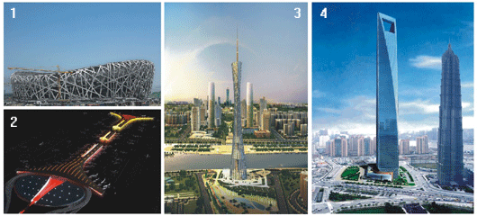

Jinggong Construction
Jinggong Construction Industry Group é especializada em design, fabricação e instalação de estruturas de edifícios de aço, e também envolvido em novos materiais de construção, contratação casa residencial e imobiliário.Jinggong estrutura de aço, com a sua companhia listada Changjiang Jinggong como plataforma de desenvolvimento, tem uma capacidade de produção anual e instalação de estruturas de aço de 400 mil toneladas, ea produção e instalação de todos os tipos de estrutura de chapa de 10 milhões de metros quadrados, que tem top class "qualificação para a fabricação de estrutura de aço, "classe 1" de qualificação para construção de projetos de estrutura de aço ", de classe a" de qualificação para o projeto da estrutura de aço ", bem como o direito de" construção externa, design, consultoria e supervisão "do Ministério da Econômico e Comércio Exterior. Ele tem cinco bases de estrutura de aço de Zhejiang, Anhui, Beijing, Hubei e Guangdong.
Jinggong Construction Industry Group realizou um grupo de projetos estruturados em aço importantes e difíceis, tais como projetos de correspondência para 2008 Jogos Olímpicos de Pequim, Xangai Global Finance Center, projetos importantes no Japão e Nigéria, desfrutando de uma reputação elevada em casa e até mesmo no mundo em aço indústria estrutura.

- National Stadium(Bird Nest)-Main Arena of Olympic Game 2008;
- Beijing Captical International Airport No.3 Terminal Building;
- Guangzhou New TV Tower;
- Shanghai Global Finance Center.